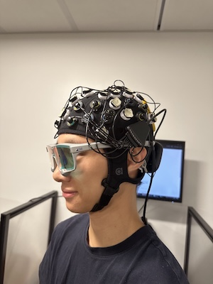
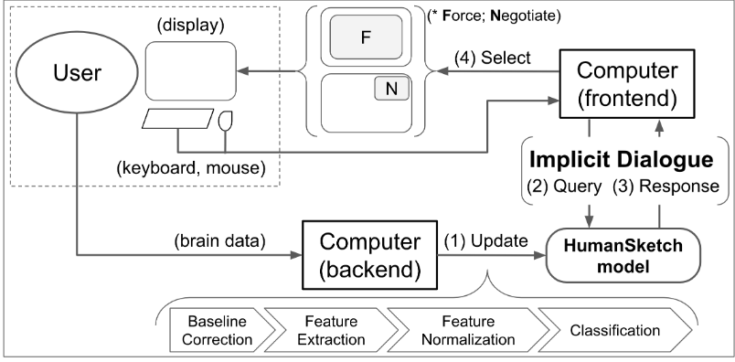
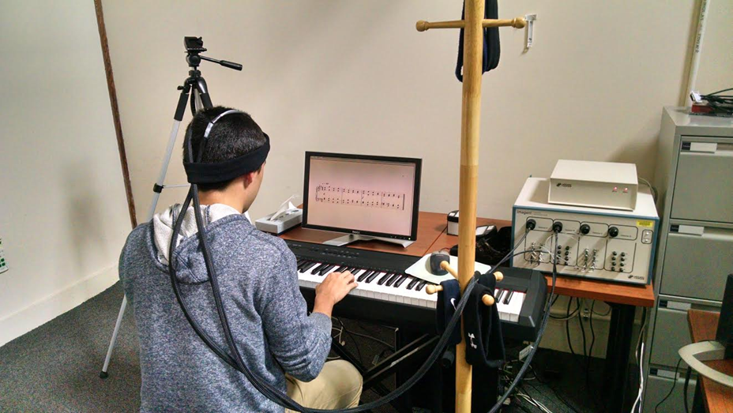
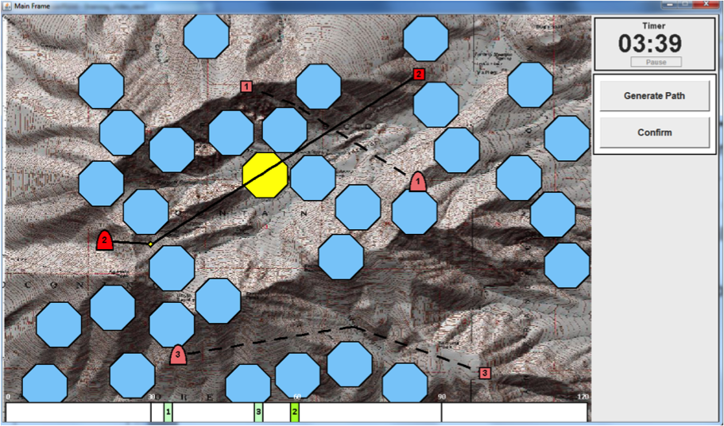

Research Areas
The current focus in my research group is on a new generation of "implicit" brain-computer
interfaces. They allow a computer to obtain and act on auxiliary inputs from its user without
requiring explicit user action or attention. Brain-computer interaction has made dramatic
progress, but its main application to date has been for physically disabled users. Our work in
real-time measurement and machine learning classification of functional near infrared
spectroscopy (fNIRS) brain data is allows to create, use, and study new kinds of implicit user
interfaces based on brain measurement.
We are using brain input as a way to obtain more information about the user and their context in
an effortless and direct way from their brain activity. We then use it to adapt the user
interface in real time. We are creating and studying these new user interfaces, with emphasis on
domains where we can measure their efficacy.
Current Projects
Investigating Effects of Mental Workload Manipulation during Motion Using Multimodel Sensors

The one subgroup of effort for which physiological
measurement remains elusive is mental effort or mental workload, which can be measured using a
variety of modalities (Krigolson et al., 2017; Nourbakhsh et al., 2012; Herff et al., 2014).
The purpose of this study is to quantify the neural (e.g. changes in blood oxygenation using
Functional Near-Infrared Spectroscopy and/or changes in electrical activity using
Electroencephalography), physiological (e.g. changes in eye movements or other motion
artifacts),
and behavioral (i.e., cognitive task performance) effects of mental workload manipulations on
participants while they are in motion.
Past Projects
Please visit our publications for information about our past projects
An Implicit Dialogue Injection System for Interruption Management
Worked towards redesigning the conventional on/off interruption management tactic (a.k.a. “Do Not Disturb Mode”) for situations where interruptions are inevitable. We intro- duced an implicit dialogue injection system, in which the computer implicitly observed the user’s state of busyness from passive mea- surement of the prefrontal cortex to determine how to interrupt the user.
An Adaptive Learning Interface that Adjusts Task Difficulty based on Brain State
Developed Brain Automated Chorales (BACh), an adaptive brain-computer system that dynamically increased the levels of difficulty in a musical learning task based on pianists’ cog- nitive workload measured by functional near-infrared spec- troscopy
Dynamic difficulty using brain metrics of workload

We used functional near-infrared
spectroscopy (fNIRS) to obtain passive brain sensing data
and detect extended periods of boredom or overload. From
these physiological signals, we adapted a simulation in or-
der to optimize workload in real-time, which allowed the sys-
tem to better fit the task to the user from moment to moment.
We ran a laboratory study
in which participants performed path planning for multiple
unmanned aerial vehicles (UAVs) in a simulation. Based on
their state, we varied the difficulty of the task by adding or removing UAVs and found that we
were able to decrease er-
rors by 35% over a baseline condition